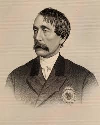

My Hero: Henry Bergh

My hero is the founder of the American Society for the Prevention of Cruelty to Animals (the ASPCA). He was born on August 28, 1813 in New York City. His father was a wealthy shipbuilder and was an honest man. He started working as a shipbuilder after dropping out of college but one day saw a bull fight that changed him forever. Him and others like him formed the ASPCA in order to give animals better treatment on April 10th 1866. He died in the year 1888 having changed the treatment of animals.
The reason he is my hero is that he gave better treatment to animals, things I appreciate and care about. Without this man, captive animals would still be whipped and beat for entertainment. And for those reasons he is my hero.
Check out more about my hero!
Click Here to back to the Home Page.